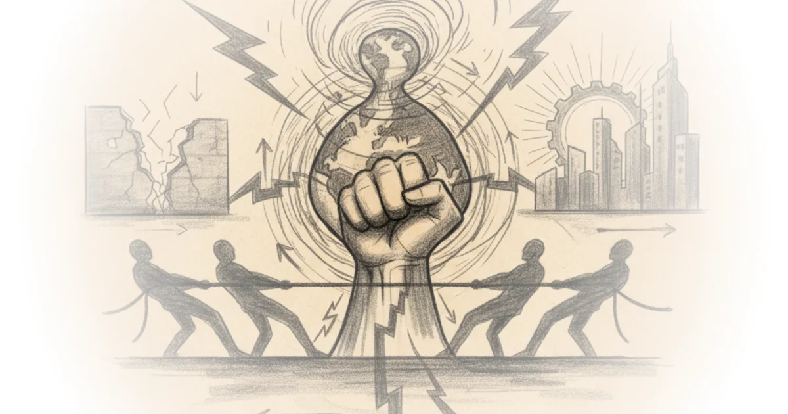
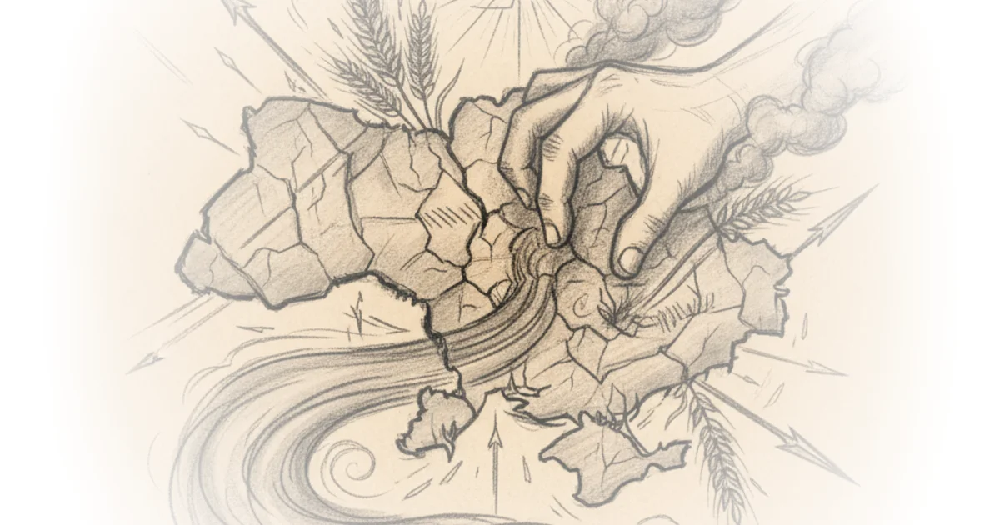
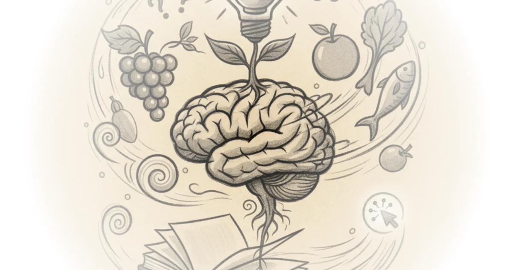
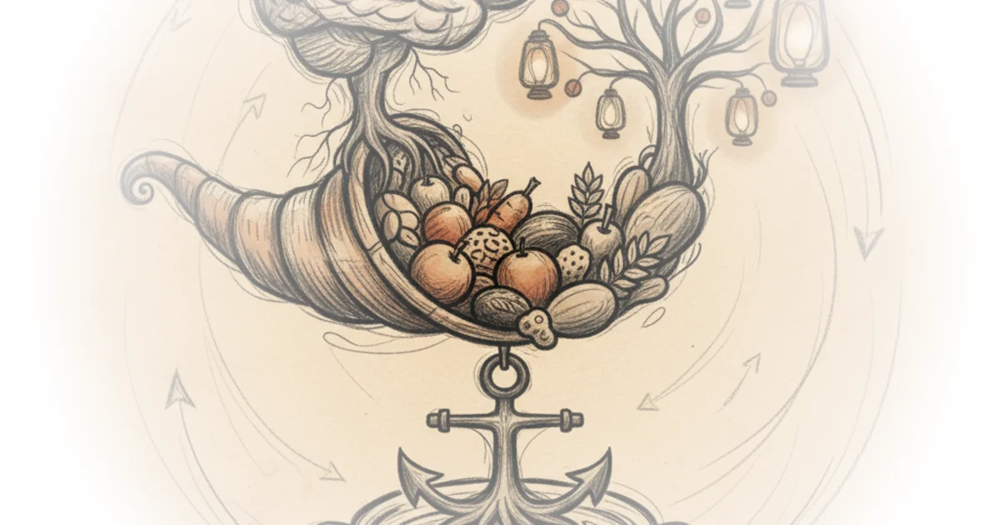
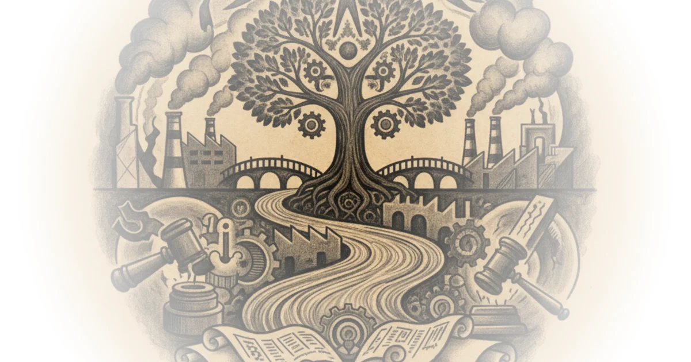

Timothy snyder: Making of modern Ukraine. Class 11.ottoman retreat, Russian power,ukrainian populism

Timothy snyder: The making of modern Ukraine. Class 1: Ukrainian questions posed by Russian invasion



